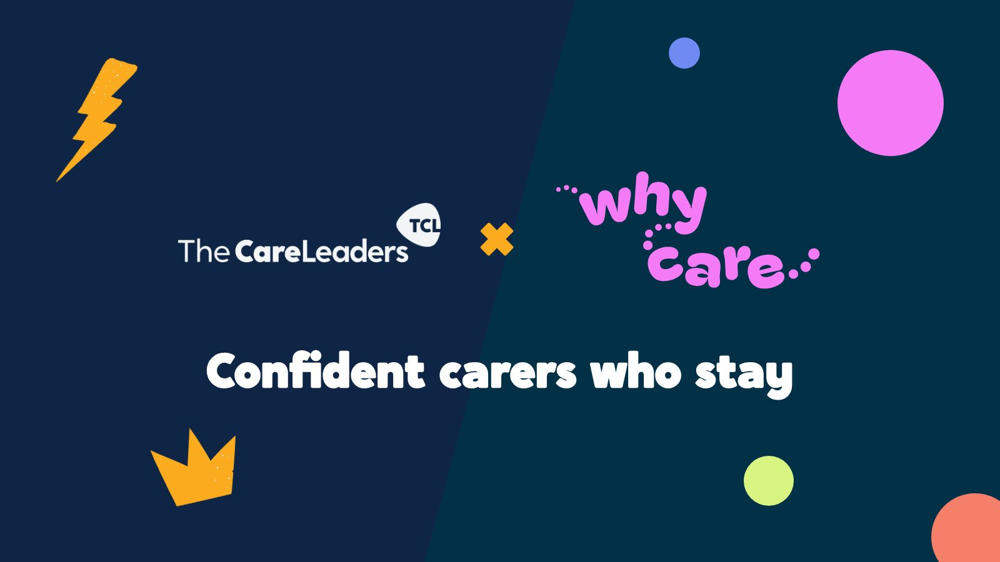

Why Care: turning people who want to foster into confident carers who stay
Fostering services aren’t short of interest. They lose people during assessment, and too many new carers leave early. The Care Leaders works in partnership with Why Care, which helps councils find where they lose applicants, assess them in small groups and support every new carer through their first year.


The problem
The problem is not interest. It is what happens next. In 2024-25, 3,290 households in England withdrew from fostering assessments while 2,050 were approved. In the same year 4,690 fostering households left and 4,430 joined (Ofsted, Fostering in England 2024-25).
What Why Care does
- Why Care Diagnostic: an 8-day review of a fostering service, from first enquiry to the end of a carer’s first year. It finds where your service loses applicants and carers, and shows you how to fix it.
- Why Care Assessment: a digital foster carer assessment, run in small groups on the Why Care platform, with practice scenarios co-designed by care-experienced young people. Applicants are ready for panel in around 4 months.
- Why Care First Year Support: every newly approved carer gets a Fostering Mentor, an experienced foster carer, plus 4 training days and group supervision.
What we did
- 2026National standardsWhy Care led the development of the new national fostering standards for the Department for Education. Luke Rodgers BEM was the engagement lead
- DurhamAssessmentApplicants ready for panel in around 4 months
- October 2026PartnershipLuke Rodgers BEM became Chief Executive of Why Care
Why a partnership
Improving fostering takes two sets of skills. The new standards ask services to change how they work, which is transformation. Doing it well means finding, assessing and keeping the right carers, which is fostering. The Care Leaders brings the first and Why Care brings the second. Both teams bring first-hand experience of care together with professional experience in social work, policy and service change.
What’s next
This work is in progress. The Diagnostic is the place to start: it shows exactly where your service loses people before you commit to anything more.
See the work
What we made, and what it looked like.
Recruitment
From first enquiry to approval: where services lose people and how to stop it.
Retention
Support that keeps carers through their first year.
The standards
Why Care’s founder was the lead drafter of the new national fostering standards. We led the national engagement.